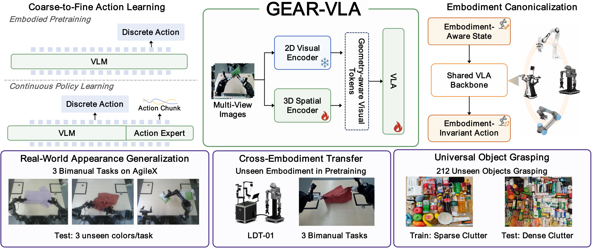

GEAR-VLA
Learning Geometry-Aware Action Representations for Generalizable Robotic Manipulation
GEAR-VLA unifies action, spatial, and embodiment representations so a VLA policy can transfer across unseen objects, dense clutter, visual shifts, and different robot platforms.
Method
Vision-Language-Action (VLA) models achieve strong benchmark performance but still struggle in real-world deployment with unseen objects, background shifts, and different robot embodiments. We argue that this stems from the lack of a unified geometry-aware manipulation representation, leaving existing VLAs vulnerable to low-level trajectory supervision, misaligned 3D features, and embodiment differences. To address this, we propose GEAR-VLA, a VLA framework for learning unified geometry-aware action representations for generalizable robotic manipulation. GEAR-VLA adopts coarse-to-fine action learning, where multi-source embodied pretraining equips the VLM with embodied reasoning and discrete action understanding before latent action tokens connect action semantics to a gradient-decoupled DiT continuous action expert. It further performs semantic-aligned 3D integration by aligning a trainable 3D spatial backbone with the VLA representation while freezing the original VLM-aligned visual pathway. To share this representation across robots, GEAR-VLA uses embodiment canonicalization, where embodiment-aware states and embodiment-invariant actions confine robot differences to the low-level interface. Extensive simulation and real-world experiments demonstrate strong generalization: GEAR-VLA achieves state-of-the-art performance on LIBERO, zero-shot LIBERO-Plus, and RoboTwin 2.0, reaches 85.9% success on AgileX and 81.0% on the pretraining-unseen LDT-01 embodiment, and obtains 90.1% success on a 6,360-trial universal grasping benchmark with 212 unseen objects. Code and models will be released.

Coarse-to-fine action learning
Embodied pretraining teaches discrete action semantics before a gradient-decoupled DiT expert maps representations to continuous action chunks.
Semantic-aligned 3D integration
A trainable 3D spatial backbone aligns geometry-aware tokens with the VLA representation while preserving the VLM-aligned visual pathway.
Embodiment canonicalization
Embodiment-aware states and embodiment-invariant actions make the representation portable across different robot morphologies.
Real-Robot Videos
Open Source
Code and models will be released
The implementation, model checkpoints, and evaluation assets will be released publicly in this repository after the review-compatible release point.
Planned release
Training code · model checkpoints · evaluation scripts · demo assets